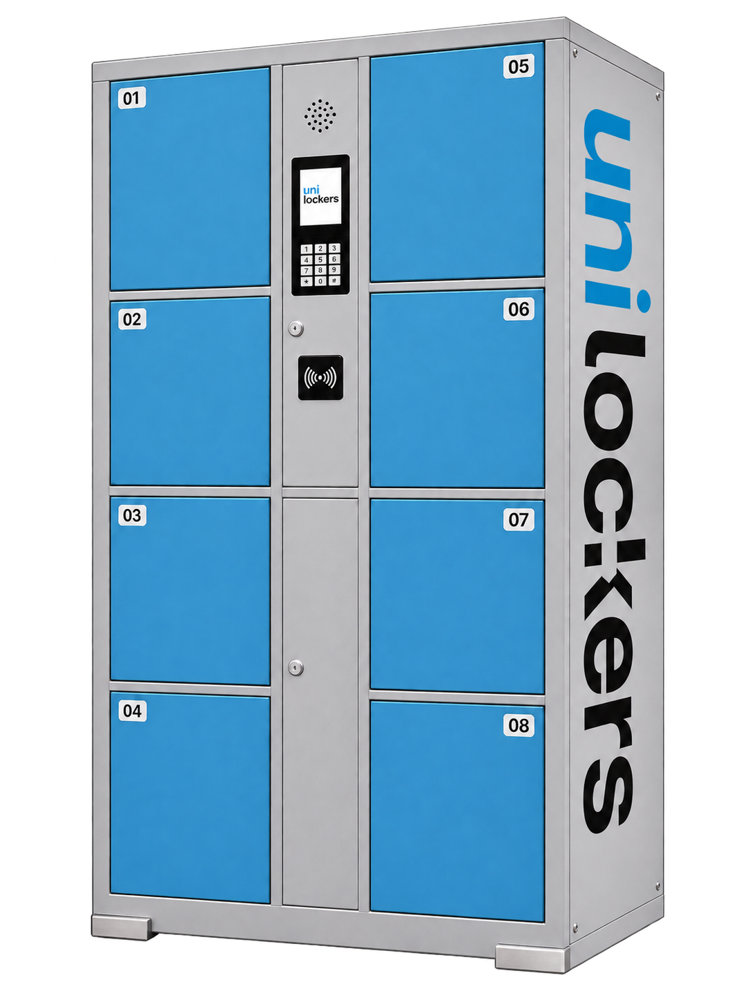
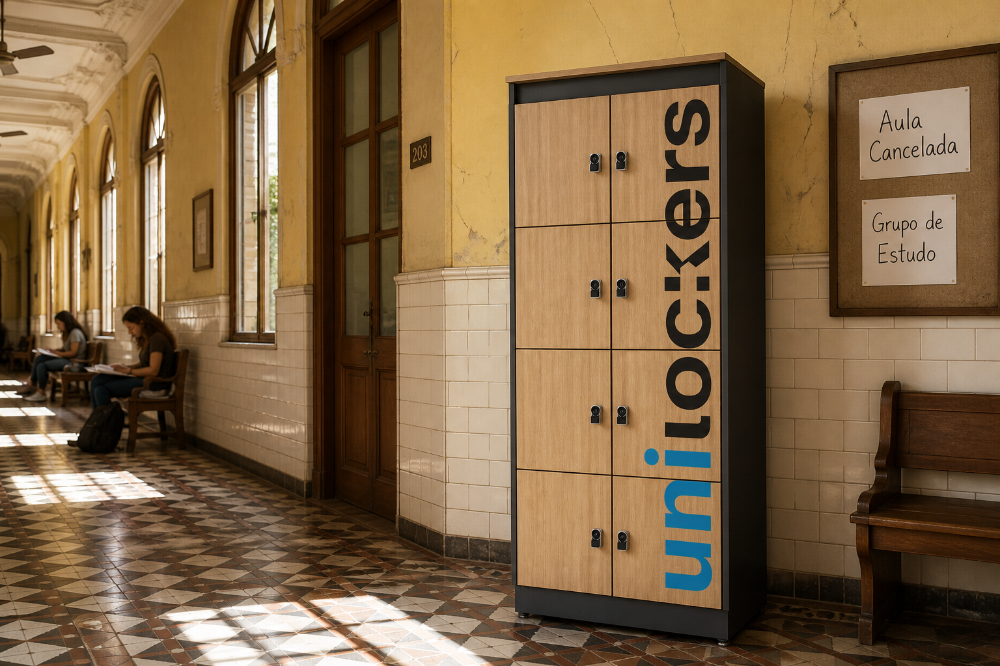
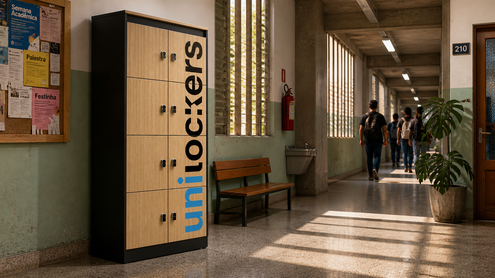
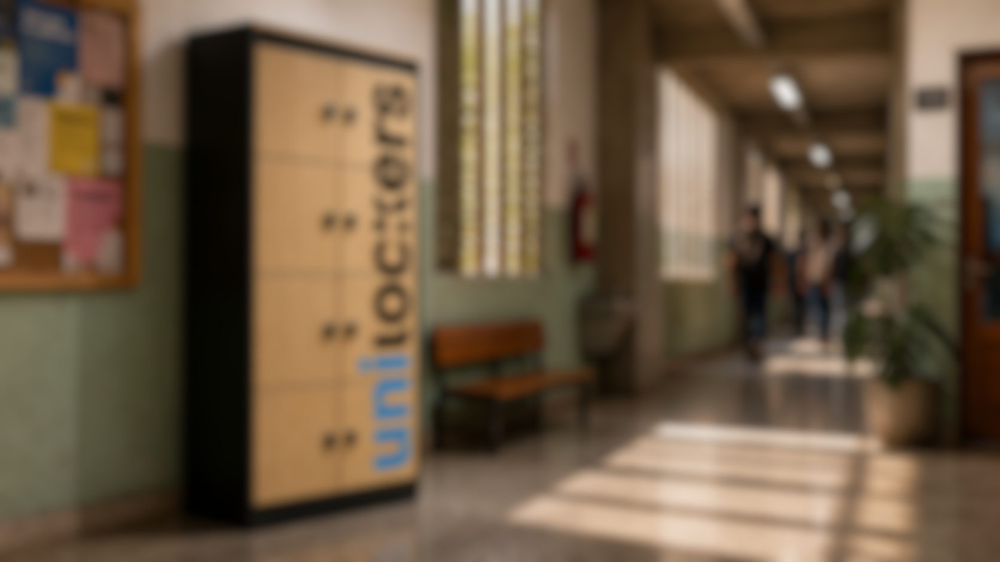
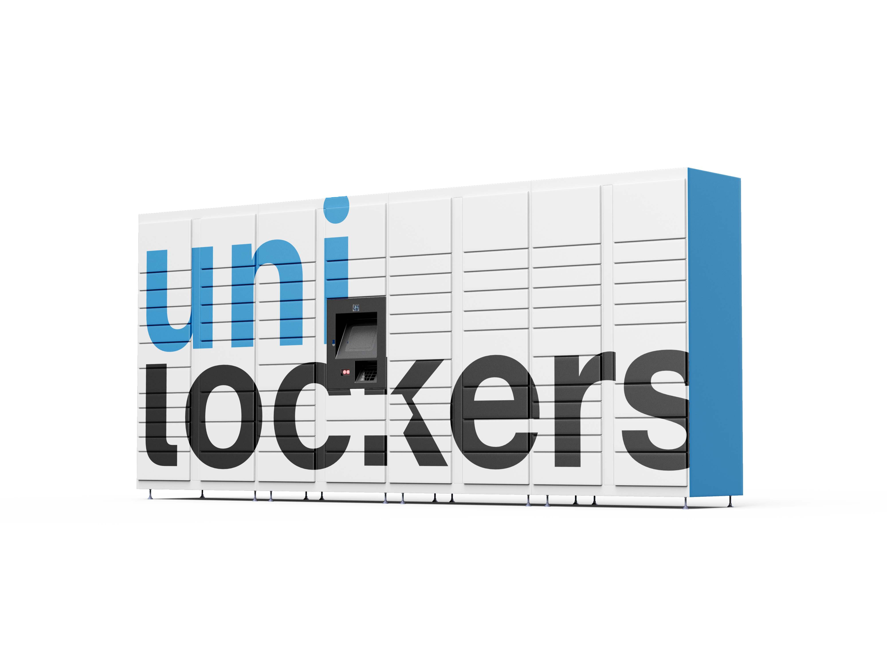

Praticidade &conveniência
Armazenamento de pertences pessoais conforme as tuas necessidades.
Proposta de valorLocação temporária de compartilhamento individualizado de armário, em regime de autosserviço.

Livros molhados
Dor nas costas

Minimização do tempo que os usuários passam carregando objetos físicos de grande peso e grandes dimensões.
Proposta de valor
O perfil do cliente ideal inclui alunos de classe média que passam longos períodos no campus e dependem de transporte público.


Armazenamento de pertences pessoais conforme as necessidades de deslocamento.
Facilidade de acesso dos usuários a seus materiais de estudo e uso cotidiano num espaço por onde eles transitam regularmente.
Minimização do tempo que os usuários passam carregando objetos físicos de grande peso e grandes dimensões.
Análise da Demanda
O mercado universitário na RMPA
99.968
estudantes de graduação presencial na Região Metropolitana de Porto Alegre
65,1%na rede privada de ensino
78,9%Concentração: 10 maiores IES englobamdas matrículas
46 IESde menor porte são porta de entrada estratégica para parcerias
Fonte: Elaboração própria com base em dados do Censo da Educação Superior 2024 (INEP)
Segmentos de clientes
45.563 estudantes englobados em três grupos de cerca de 15.000 estudantes cada:
Foco prioritário em estudantes de graduação e pós-graduação de cursos com materiais volumosos (tais como Música, Medicina, Direito, Arquitetura, Artes).
O perfil do cliente ideal inclui alunos de classe média que passam longos períodos no campus e dependem de transporte público.
Contemplam-se alunos que alternam entre rotinas de estudo, trabalho/estágio e práticas esportivas no mesmo dia.
Possibilidade de automação
Integração futura de contratação e pagamentos por automação via N8N.

Liberação remota dos segredos e PINs dos escaninhos após confirmação do pagamento no projeto piloto.
Aspectos Locacionais
Lockers instalados nas dependências de instituições, principalmente privadas, e possivelmente eventos acadêmicos
Instituições concentradas no Centro e, em menor medida, ao seu sul, bem como na Zona Norte e Canoas
Viabilidade
em cinco anos
A meta é recuperar o investimento até o mês 60 e remunerar o capital a 12% real ao ano.
A base do estudo
Um módulo de oito portas, quatro mensais e quatro temporárias. O cenário principal considera capital próprio e Simples desde a abertura, com comparação separada dos financiamentos.
A comparação de regimes favoreceu o Simples desde a abertura. A hipótese de locação pura deduz a parcela de ISS do Simples. O custo contábil foi revisto com a nova versão do trabalho.
- Receita do primeiro ano
- R$ 50.167
- Caixa gerado após tributos e reposições
- R$ 28.430
- Aporte próprio sem dívida
- R$ 12.490
- Payback simples / descontado
- 7 / 7 meses
- VPL determinístico sem dívida
- R$ 113.663
Cenário determinístico com dedicação do sócio sem retirada. O custo econômico do trabalho é avaliado no estudo. O retorno depende da procura assumida, ainda sem calibração por vendas.
Muitos caminhos.
Uma decisão.
10.000 simulações exploram demanda, custos e risco. A melhor opção é escolhida antes de observar a amostra de validação.
Monte Carlo em 60 meses
Trajetórias do cenário comercial vencedor, sem dívida.
Linhas finas: 120 trajetórias da validação. Faixa: percentis 5–95 das 5.000 trajetórias. A curva lateral representa a distribuição final estimada.
R$ 15/h · R$ 300/mês · 4 + 4 portas
- VPL médio
- R$ 124.691
- P10 do VPL
- R$ 41.385
- Falta de caixa
- 0,06%
Comparação comercial: um módulo, sem dívida e no Simples desde a abertura. 5.000 trajetórias de seleção e 5.000 de validação. O retorno acumulado desconta o investimento inicial e usa taxa nominal compatível com inflação e retorno real exigido.
O que o gráfico não comprova
As probabilidades dependem das distribuições assumidas. Conversão, frequência de uso e elasticidade de preço ainda não foram medidas no campus. A faixa de 90% representa dispersão simulada, não um intervalo de confiança de vendas reais.
Como financiar
o primeiro módulo
Mais dívida reduz o aporte inicial e aumenta a pressão sobre o caixa. Taxa, tarifas e carência precisam ser avaliadas juntas.
| Financiado | Aporte próprio | Primeira amortização + juros | Custo efetivo estimado a.a. | Falta de caixa |
|---|---|---|---|---|
| Carregando comparação… | ||||
SAC em 60 meses, com 12 de carência de principal e juros pagos. TR de referência + 6,068% a.a., com encargos estimados. Condições e elegibilidade não aprovadas.
Uma linha para cada fase
O BRDE Jovem Empreendedor é pertinente ao perfil informado. Finep e Badesul exigem análise de enquadramento e crédito. O Cartão BNDES não foi presumido como fonte para importar este equipamento. O capital de giro no BRDE depende da receita anterior.
A negociação vem antes
A empresa ainda não tem CNPJ ou faturamento. Nenhum crédito está aprovado. A faixa anunciada de compra de duas unidades não traz desconto automático: o anúncio mantém o mesmo preço entre 1 e 99 peças.
Roadmap
- entendimento do projeto
primeiras ideias
- elaboração da viabilidade econômica
- lançamento dos pilotos
- validação do modelo & escalar
Abra o estudo
Premissas, orçamento, tributação, financiamento e limitações estão documentados para revisão.
Fontes e premissas
Apresentações “Projeto de Botas-3” (setembro de 2026), “2ª Apresentação de Botas” (outubro de 2026), trabalho “3ª Avaliação de Botas” e anúncio do fornecedor enviados pelo grupo. Dados de renda da rede privada da RMPA aplicados a um campus de referência; não são pesquisa de adesão.
Revisão de 15/11/2026. Honorários contábeis, dedução do ISS na locação pura e partilhas de transição revistos. IBS/CBS fora do DAS são cenários parametrizados. Depreciação gerencial de 5% a.a.; aceitação fiscal a validar.